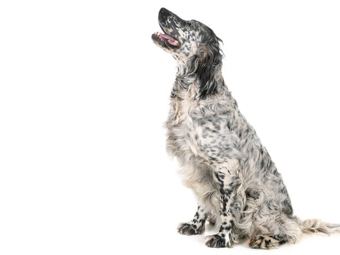

Австралийская овчарка Эту собаку часто сравнивают с бордер-колли. Они крепкие и мускулистые. Длина их тела немного превосходит высоту. Рост — 51-58 см (самцы) и 46-53 см (самки). Вес колеблется от 19 до 29 кг в зависимости от пола и конституции.Американский стаффордширский терьер Проживание в городской квартире — не повод отказывать себе в четвероногом друге. Но и миниатюрные декоративные собачки привлекают не всех. Если хочется иметь сильную собаку-защитника — присмотритесь к американскому стаффордширскому терьеру..

Английский сеттер Эта крупная и элегантная порода имеет симметричное и крепкое телосложение. Они – воплощение силы, изящества и выносливости .Бельгийская овчарка грюнендальГрюнендаль — это длинношерстная порода среднего размера квадратной формы. Хотя ее часто путают с длинношерстной немецкой овчаркой, ее силуэт в профиль вписывается в квадрат. Она отличается более легковесным скелетом и более утонченной головой, а также легкими, быстрым движениями.
.БигльЭти крепкие и смелые маленькие собаки выглядят добродушными, отличаются спортивным сложением. Их короткая густая шерсть устойчива к погодным условиям и имеет ряд окрасов и рисунков (подробности см. в стандарте породы).Бладхаунд Ищейки легко узнаваемы благодаря благородной морщинистой голове, отвисшим нижним векам и длинным висящим ушам. У собаки мощное тело и конечности, и это действительно большие собаки! У них короткая гладкая шерсть.Джек-рассел Активная, энергичная, быстрая и харизматичная — та самая собака из фильма «Маска».Название породы произошло от имени известного английского селекционера Джека Рассела, жившего в XIX веке.Гамильтонстёваре Гамильтонстёваре — умная, сильная гончая среднего или крупного размера. Длина ее тела немного превышает высоту. Шерсть — короткая, близко прилегающая к телу, с окрасом триколор (черный, подпал и белый). Гладкошерстный чихуахуа Гладкошерстный чихуахуа — это самая маленькая порода собак, с куполообразной, похожей на яблоко головой, а также короткой, гладкой и красивой шерстью. Возможны различные окрасы: от желтовато-коричневого (олень) до черного. Доберман Доберман — это умеренно крупная, мощная, но элегантная собака. Шерсть — гладкая, короткая. Собака горделиво несет свое тело, подобно чистокровной лошади. Доберманы полны энергии и ума, что делает их отличными опекунами и замечательными кандидатами на работу в полиции и армии.